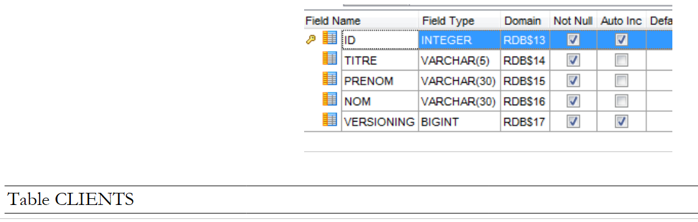
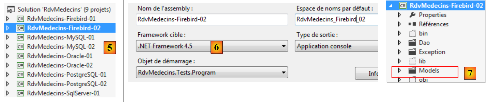
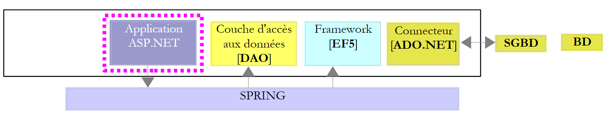

7. Firebird 2.1 案例研究
7.1. 安装工具
需要安装的工具如下：
- 数据库管理系统（DBMS）：[http://www.firebirdsql.org/en/firebird-2-1-5/]；
- 管理工具：EMS SQL Manager for InterBase/Firebird 免费版 [http://www.sqlmanager.net/fr/products/ibfb/manager/download]。
在下面的示例中，用户名为 sysdba，密码为 masterkey。
让我们启动 Firebird，然后启动 [SQL Manager Lite for Firebird] 工具，我们将使用它来管理该数据库管理系统。
 |
- 在[1]中，我们通过“开始”菜单启动 Firebird DBMS。在此，该 DBMS 尚未作为 Windows 服务安装；
- 在[2]中，服务已启动。屏幕右下角会出现一个图标。右键单击该图标即可停止数据库管理系统。
现在我们启动 [SQL Manager Lite for Firebird] 工具，我们将使用它来管理该数据库管理系统 [3]。
 |
- 在[4]中，我们创建了一个新数据库；
- 在[5]中，我们进行了确认；
 |
- 在 [5] 中，我们以 SYSDBA / masterkey 身份登录；
- 在 [6] 中，指定要创建的文件的位置。数据库将作为单个文件创建；
- 在 [7] 中，我们验证待执行的 SQL 语句；
 |
- 在 [8] 中，数据库已创建。现在必须在 [EMS Manager] 中注册该数据库。信息正确。点击 [确定]；
- 在 [9] 中，登录该数据库；
- 在[10]中，[EMS Manager]显示了该数据库，目前该数据库为空。
接下来，我们将把一个 VS 2012 项目连接到此数据库。
7.2. 基于实体创建数据库
首先，我们将 [RdvMedecins-SqlServer-01] 项目文件夹复制为 [RdvMedecins-Firebird-01] [1]：
 |
- 在 [2] 中，在 VS 2012 中，我们将 [RdvMedecins-SqlServer-01] 项目从解决方案中移除；
 |
- 在 [3] 中，该项目已被移除；
- 在 [4] 中，我们添加另一个项目。该项目取自我们之前创建的 [RdvMedecins-Firebird-01] 文件夹；
 |
- 在 [5] 中，加载的项目名为 [RdvMedecins-SqlServer-01]；
- 在 [6] 中，我们将它的名称更改为 [RdvMedecins-Firebird-01]
 |
- 在 [7] 中，我们将另一个项目添加到解决方案中。该项目取自先前从解决方案中移除的项目的 [RdvMedecins-SqlServer-01] 文件夹；
- 在 [8] 中，[RdvMedecins-SqlServer-01] 项目已重新添加到解决方案中。
[RdvMedecins-Firebird-01] 项目与 [RdvMedecins-SqlServer-01] 项目完全相同。我们需要进行一些修改。在 [App.config] 中，我们将修改连接字符串和 [DbProviderFactory]，这些内容必须根据不同的数据库管理系统（DBMS）进行适配。
<!-- connection chain on base -->
<connectionStrings>
<add name="monContexte" connectionString="User=SYSDBA;Password=masterkey;Database=D:\data\istia-1213\c#\dvp\Entity Framework\databases\firebird\RDVMEDECINS-EF.GDB;DataSource=localhost;
Port=3050;Dialect=3;Charset=NONE;Role=;Connection lifetime=15;Pooling=true;MinPoolSize=0;MaxPoolSize=50;Packet Size=8192;ServerType=0;" providerName="FirebirdSql.Data.FirebirdClient" />
</connectionStrings>
<!-- the factory provider -->
<system.data>
<DbProviderFactories>
<add name="Firebird Client Data Provider" invariant="FirebirdSql.Data.FirebirdClient" description=".Net Framework Data Provider for Firebird" type="FirebirdSql.Data.FirebirdClient.FirebirdClientFactory, FirebirdSql.Data.FirebirdClient, Version=2.7.7.0, Culture=neutral, PublicKeyToken=3750abcc3150b00c" />
</DbProviderFactories>
</system.data>
- 第 3 行：用户名和密码，以及 Firebird 数据库的完整路径；
- 第 8–10 行：DbProviderFactory。第 9 行引用了一个我们尚未拥有的 DLL [FirebirdSql.Data.FirebirdClient]。我们可以使用 NuGet [1] 获取它：
 |
- 在 [2] 中，在搜索框中输入关键词“firebird”；
- 在 [3] 中，选择 [Firebird ADO.NET Data Provider] 包。这是一个用于 Firebird 的 ADO.NET 连接器；
 |
- 在 [4] 中，添加新的引用；
- 在 [5] 中，即 [App.config] 文件中，您必须指定 DLL 的正确版本。您可以在其属性中找到该版本信息。
在 [Entities.cs] 文件中，您需要调整将要生成的表的架构：
[Table("MEDECINS")]
public class Medecin : Personne
{...}
[Table("CLIENTS")]
public class Client : Personne
{...}
[Table("CRENEAUX")]
public class Creneau
{...}
[Table("RVS")]
public class Rv
{...}
在此，这些表没有模式。
我们配置项目的执行：
 |
- 在 [1] 中，我们为将要生成的程序集指定了一个不同的名称；
- 在 [2] 中，我们还指定了一个不同的默认命名空间；
- 在 [3] 中，我们指定了要执行的程序。
在此阶段，没有编译错误。让我们运行 [CreateDB_01] 程序。我们得到以下异常：
我们记得在 MySQL、Oracle 和 PostgreSQL 中都遇到过相同的错误。这与实体中 Timestamp 字段的类型有关。我们进行与前两个数据库管理系统相同的修改。在实体中，我们将以下三行代码替换为
[Column("TIMESTAMP")]
[Timestamp]
public byte[] Timestamp { get; set; }
如下所示：
[ConcurrencyCheck]
[Column("VERSIONING")]
public int? Versioning { get; set; }
因此，我们将该列的类型从 byte[] 改为 int?。在数据库管理系统中，我们将使用存储过程，在每次插入或修改行时将该整数递增 1。
我们对所有四个实体都进行了上述修改，然后重新运行应用程序。随后我们收到以下错误：
第 1 行提示数据库正在使用中。我认为并非如此，且未能解决此问题。
算了。我们将使用 [EMS Manager for Firebird] 工具手动创建 [RDVMEDECINS-EF] 数据库。本文不会详细描述每个步骤，仅介绍最重要的步骤。
Firebird 数据库结构如下：
表
 |
- 在[1]中，
ID是一个带有</span>*Autoincrement*属性的主键。它将由数据库管理系统自动生成；
 |
 |
 |
这些表的主键和外键与前面的示例中的相同。这些外键具有 ON DELETE CASCADE 属性。
生成器
与 Oracle 和 PostgreSQL 一样，我们创建了序列号生成器。共有 5 个 [1]。
 |
- [CLIENTS_ID_GEN] 将用于生成 [CLIENTS] 表的主键；
- [MEDECINS_ID_GEN] 将用于生成 [MEDECINS] 表的主键；
- [CRENEAUX_ID_GEN] 将用于生成 [CRENEAUX] 表的主键；
- [RVS_ID_GEN] 将用于生成 [RVS] 表的主键；
- [VERSIONS_GEN] 将用于生成所有表中 [VERSIONING] 列的值。
触发器
触发器是在表中发生某个事件（插入、更新、删除）之前或之后由数据库管理系统（DBMS）执行的存储过程。我们共有 8 个触发器 [1]：
 |
让我们来看一下 [BI_CLIENTS_ID] 触发器的 DDL 代码，该触发器用于填充 [CLIENTS] 表的 [ID] 列：
- 第 2 行：在向 [CLIENTS] 表插入数据之前；
- 第 6-7 行：如果 ID 列为 NULL，则将其赋值为 [CLIENTS_ID_GEN] 编号生成器中的下一个值。
触发器 [BI_CLIENTS_ID、BI_MEDECINS_ID、BI_CRENEAUX_ID、BI_RVS_ID] 均按相同方式构建。
现在让我们看看 [CLIENTS_VERSION_TRIGGER] 触发器的 DDL 代码，该触发器用于填充 [CLIENTS] 表的 [VERSIONING] 列：
- 第 1–3 行：在 [CLIENTS] 表上的每次 INSERT 或 UPDATE 操作之前；
- 第 6 行：["VERSIONING"] 列从数字生成器 [VERSIONS_GEN] 获取下一个值。该生成器负责填充这四个表的 ["VERSIONING"] 列。
触发器 [MEDECINS_VERSION_TRIGGER、CRENEAUX_VERSION_TRIGGER、RVS_VERSION_TRIGGER] 的工作原理类似。
用于在 Firebird 数据库 [RDVMEDECINS-EF] 中生成表的脚本已放置在 [RdvMedecins / databases / Firebird] 文件夹中。读者可以加载并运行该脚本以创建表。
完成此操作后，即可运行项目中的各项程序。这些程序生成的结果与在 SQL Server 上的结果相同，但 [ModifyDetachedEntities] 程序除外——该程序会因与在 Oracle 和 MySQL 上相同的理由而崩溃。解决此问题的方法也相同。 只需将 [RdvMedecins-Oracle-01] 项目中的 [ModifyDetachedEntities] 程序复制到 [RdvMedecins-Firebird-01] 项目中即可。
7.3. 基于 EF 5 的多层架构
我们回到第 2 段中描述的案例研究。
 |
我们将首先构建 [DAO] 数据访问层。为此，我们将 VS 2012 控制台项目 [RdvMedecins-SqlServer-02] 复制为 [RdvMedecins-Firebird-02] [1]：
 |
- 在[2]中，我们删除[RdvMedecins-SqlServer-02]项目；
 |
- 在[3]中，我们将一个现有项目添加到解决方案中。该项目取自刚刚创建的[RdvMedecins-Firebird-02]文件夹；
- 在 [4] 中，新项目的名称与被删除的项目相同。我们将更改其名称；
 |
- 在 [5] 中，我们已更改了项目名称；
- 在 [6] 中，我们修改了部分属性，例如此处的装配体名称；
- 在[7]中，删除了[Models]文件夹，并用[RdvMedecins-Firebird-01]项目中的[Models]文件夹替换。这是因为这两个项目共享相同的模型。
 |
- 在[8]中，该项目的当前引用；
- 在 [9] 中，已使用 NuGet 工具添加了 Firebird ADO.NET 连接器。
在 [App.config] 文件中，将 SQL Server 数据库信息替换为 Firebird 数据库信息。这些信息可在 [RdvMedecins-Firebird-01] 项目的 [App.config] 文件中找到：
<!-- connection chain on base -->
<connectionStrings>
<add name="monContexte" connectionString="User=SYSDBA;Password=masterkey;Database=D:\data\istia-1213\c#\dvp\Entity Framework\databases\firebird\RDVMEDECINS-EF.GDB;DataSource=localhost;
Port=3050;Dialect=3;Charset=NONE;Role=;Connection lifetime=15;Pooling=true;MinPoolSize=0;MaxPoolSize=50;Packet Size=8192;ServerType=0;" providerName="FirebirdSql.Data.FirebirdClient" />
</connectionStrings>
<!-- the factory provider -->
<system.data>
<DbProviderFactories>
<add name="Firebird Client Data Provider" invariant="FirebirdSql.Data.FirebirdClient" description=".Net Framework Data Provider for Firebird" type="FirebirdSql.Data.FirebirdClient.FirebirdClientFactory, FirebirdSql.Data.FirebirdClient, Version=2.7.7.0, Culture=neutral, PublicKeyToken=3750abcc3150b00c" />
</DbProviderFactories>
</system.data>
Spring管理的对象也会发生变化。目前我们有：
<!-- spring configuration -->
<spring>
<context>
<resource uri="config://spring/objects" />
</context>
<objects xmlns="http://www.springframework.net">
<object id="rdvmedecinsDao" type="RdvMedecins.Dao.Dao,RdvMedecins-SqlServer-02" />
</objects>
</spring>
第 7 行引用了 [RdvMedecins-SqlServer-02] 项目的程序集。该程序集现已更名为 [RdvMedecins-Firebird-02]。
完成上述操作后，我们即可运行 [DAO] 层的测试。首先，必须确保数据库已填充数据（使用 [RdvMedecins-Firebird-01] 项目中的 [Fill] 程序）。测试程序通过。
我们按照处理 [RdvMedecins-SqlServer-02] 项目的方法创建该项目的 DLL，并将所有项目 DLL 集中到 [RdvMedecins-Firebird-02] 中创建的 [lib] 文件夹中。这些将作为后续 [RdvMedecins-Firebird-03] Web 项目的引用。
 |
现在，我们准备开始构建应用程序的 [ASP.NET] 层：
 |
我们将从 [RdvMedecins-SqlServer-03] 项目开始。我们将把此项目文件夹复制为 [RdvMedecins-Firebird-03] [1]：
 |
- 在 [2] 中，使用 VS 2012 Express for the Web，我们打开 [RdvMedecins-Firebird-03] 文件夹中的解决方案；
- 在 [3] 中，我们将解决方案名称和项目名称均进行修改；
 |
- 在 [4] 中，查看项目当前的引用；
- 在 [5] 中，我们将其删除；
- 在 [6] 中，用我们刚刚存储在 [RdvMedecins-Firebird-02] 项目内 [lib] 文件夹中的 DLL 引用替换它们。
剩下的就是修改 [Web.config] 文件。我们将该文件的当前内容替换为 [RdvMedecins-Firebird-02] 项目中 [App.config] 文件的内容。完成此操作后，运行 Web 项目。它运行正常。请记住，在运行 Web 应用程序之前，先向数据库中插入数据。